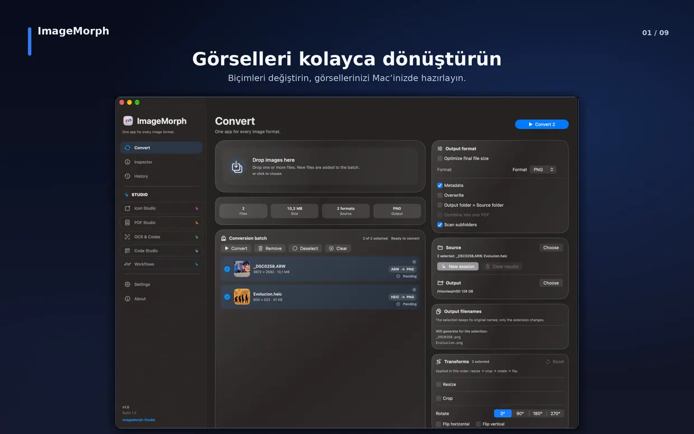
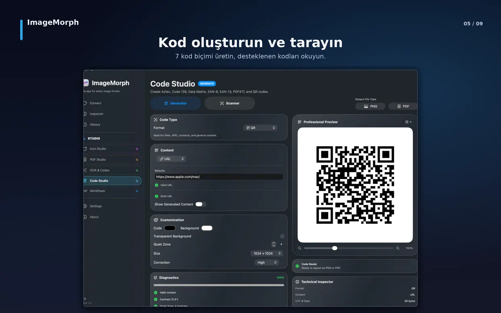
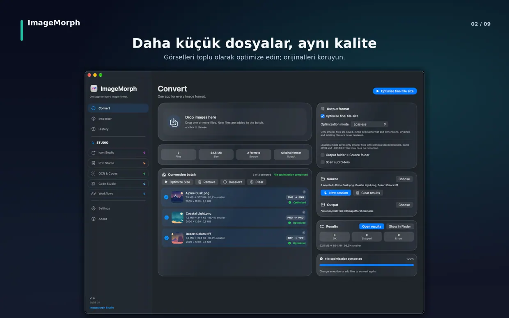
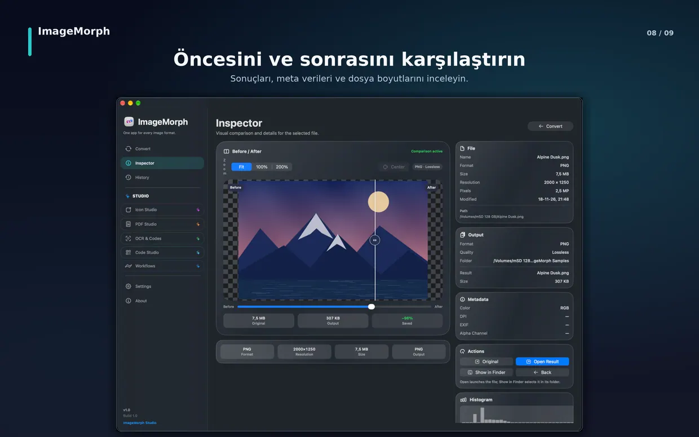
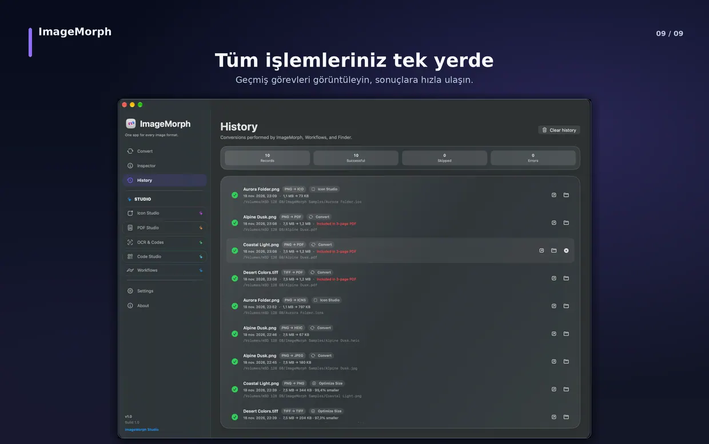
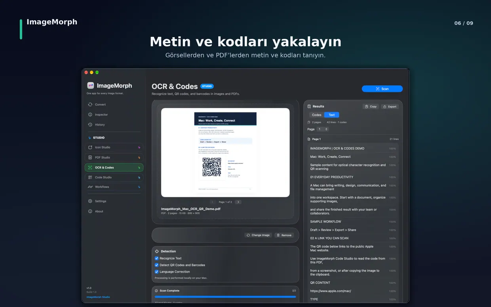
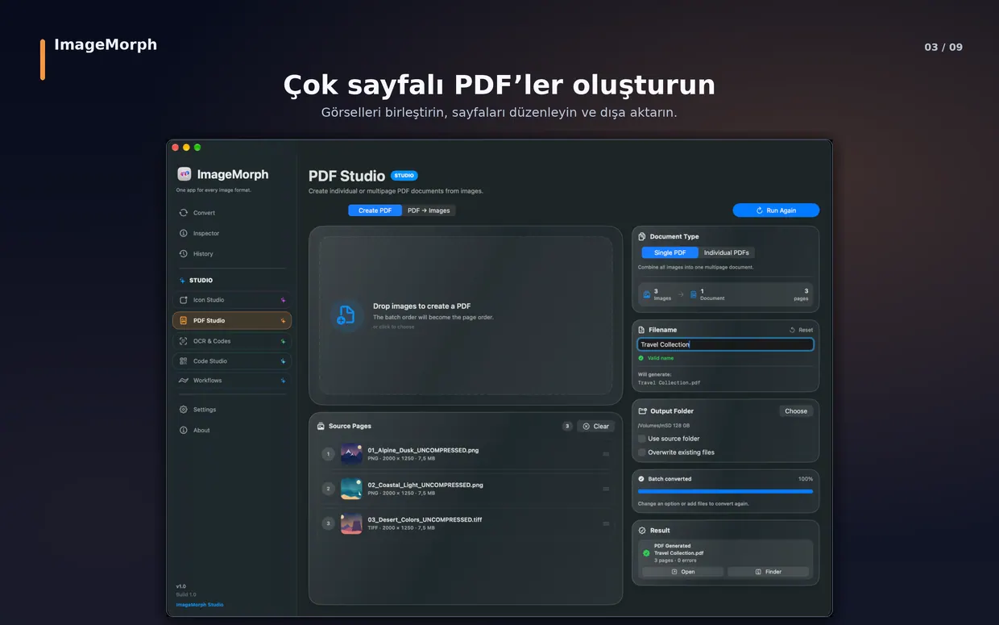
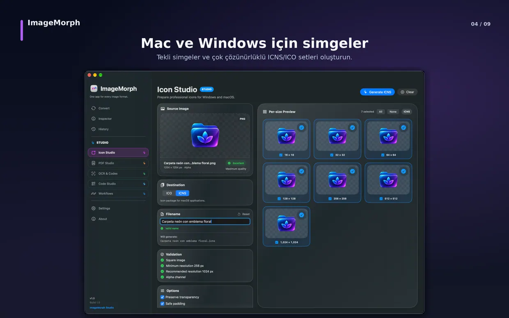
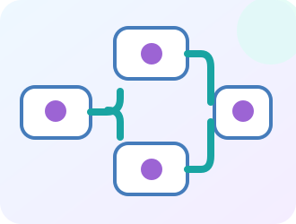
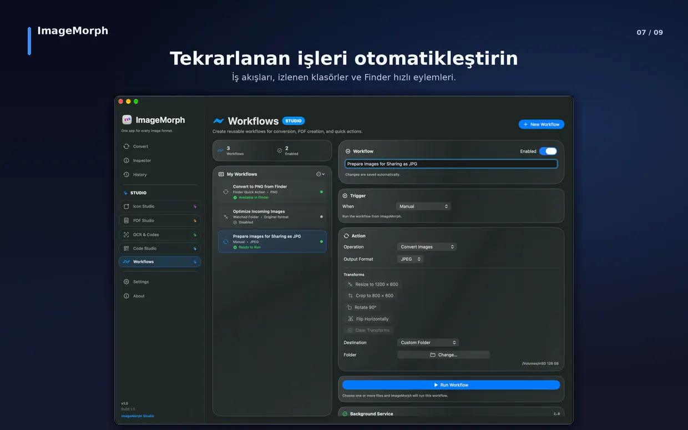

JPEG · PNG · HEIC · TIFF
JPEG, PNG, HEIC ve TIFF dosyalarını tek tek veya toplu işleyin.

Mac’inizde görselleri dönüştürün, yeniden boyutlandırın ve optimize edin. PDF oluşturun ve tekrarlanan işleri otomatikleştirin.
Mac App Store lansmanına hazırlanıyor.

Mac’inizde görselleri dönüştürün, yeniden boyutlandırın ve optimize edin. PDF oluşturun ve tekrarlanan işleri otomatikleştirin.

Görsellerde ve çok sayfalı PDF’lerde metin tanıyın, sonuçları inceleyip dışa aktarın.
E-posta veya PDF içindeki QR kodunu Mac’inizde okuyun, açmadan önce hedef adresi inceleyin.


URL önizlemesi sitenin güvenli olduğunu garanti etmez. Alan adını kontrol edin ve şüpheli sitelerde bilgi paylaşmayın.
Kod araçlarını keşfetJPEG, PNG, HEIC ve TIFF dosyalarını tek tek veya toplu işleyin.

Görsellerin boyutlarını ve oranlarını ihtiyacınıza göre değiştirin; gerektiğinde en-boy oranını koruyun.

Desteklenen kayıpsız veya kayıplı optimizasyon; yalnızca daha küçükse çıktı alın.

Biçim, boyut ve meta verileri inceleyin. Dönüştürmeden sonra sonucu orijinaliyle karşılaştırın.

Önceki işlemleri gözden geçirin; dosyalar hâlâ varsa sonuçları açın veya Finder’da gösterin.

Studio; OCR, kod okuma, PDF araçları, simgeler ve otomasyonu bir araya getirir. Abonelik olmadan tek seferlik satın alma.
Studio isteğe bağlı kalıcı bir uygulama içi satın almadır.

Görsellerde ve çok sayfalı PDF’lerde metin tanıyın, sonuçları inceleyip dışa aktarın.


Kodları panodan, görsellerden, PDF’lerden ve klasörlerden okuyun veya uyumlu kameralarla ve tarayıcılarla yakalayın. Açmadan önce bağlantıları inceleyin.


Çok sayfalı PDF oluşturun, sayfaları görsel olarak dışa aktarın ve döndürün.

ICO ve ICNS oluşturun, dışa aktarmadan önce boyutları denetleyin.


QR, Code128, Data Matrix, EAN, PDF417 ve Aztec kodlarını PNG veya PDF olarak dışa aktarın.

İş akışlarını kaydedin, klasörleri izleyin ve Finder işlemlerini başlatın.

| Özellik | Free | Studio |
|---|---|---|
| Dönüştürme, boyutlandırma, optimizasyon | Dahil | Dahil |
| Kuyruk, Inspector, karşılaştırma, histogram | Dahil | Dahil |
| Temel PDF oluşturma | Dahil | Dahil |
| PDF Studio ve sayfa dışa aktarma | — | Dahil |
| OCR ve kod tanıma | — | Dahil |
| Kod üretme ve kamera/tarayıcı girişi | — | Dahil |
| ICO ve ICNS setleri | — | Dahil |
| İş akışları, izlenen klasörler, Finder Hızlı Eylemleri | — | Dahil |
Yerel fiyat, Studio erişimi ve deneme uygunluğu uygulamada gösterilir. Satın alma ve geri yükleme Apple hizmetlerini kullanır.
Görsel dönüştürme ve optimizasyon, PDF oluşturma ve OCR işlemleri Mac’inizde yapılır. Dosya içeriği Studio deneme hizmetine gönderilmez. Dosya, klasör, kamera ve tarayıcı için izin gerekir; ayarlar, geçmiş, yer imleri, adlar, yollar ve hata günlükleri yerel olarak saklanabilir.
Gizlilik politikasını oku